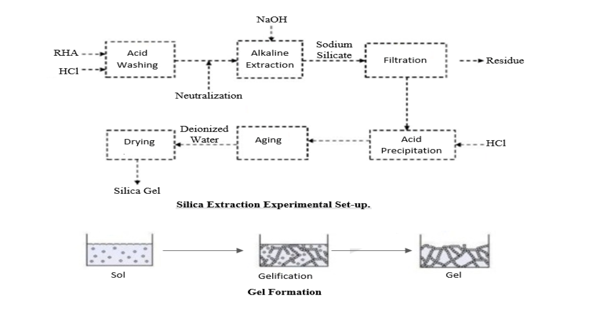
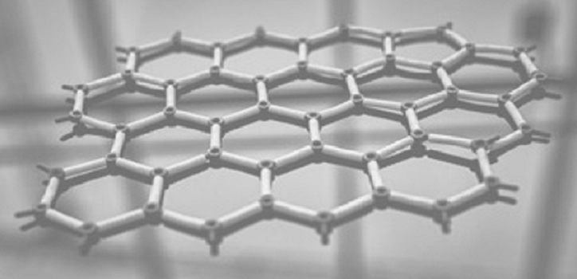

Extraction of Silica
Using Burnt Rice Husk
Services
Model Designing,
Reaction Stimulation
Date
December 2021 - Present

Paddy Husk is an important agricultural residue. Most of RH will burn as fuel to generate energy resulting in the waste product, Paddy Husk ash. Paddy Husk ash usually contains more than 60% silica (SiO2), 10–40% carbon with minor mineral composition. Paddy Husk ash has a relatively high content of inorganic compounds, representing approximately 20% of the dry weight of the husk.Silica gel can be further converted into silica membrane. Silica membranes are prepared by three different kinds of techniques, counter-diffusion chemical vapor deposition (counter-diffusion CVD), chemical vapor deposition (CVD), and sol–gel technique. Sol-gel technique is the best method for this conversion as it is cheap.
 The project decreases CO2 emission due to the current manufacture of sodium silicate from the reaction of Na2CO3 and SiO2. It consumes low energy. It is cost effective as compared to the melting method. Silica produced is used in many inorganic and organometallic materials which have applications in synthetic chemistry as catalysts, and in thin films or coating for electronic materials.